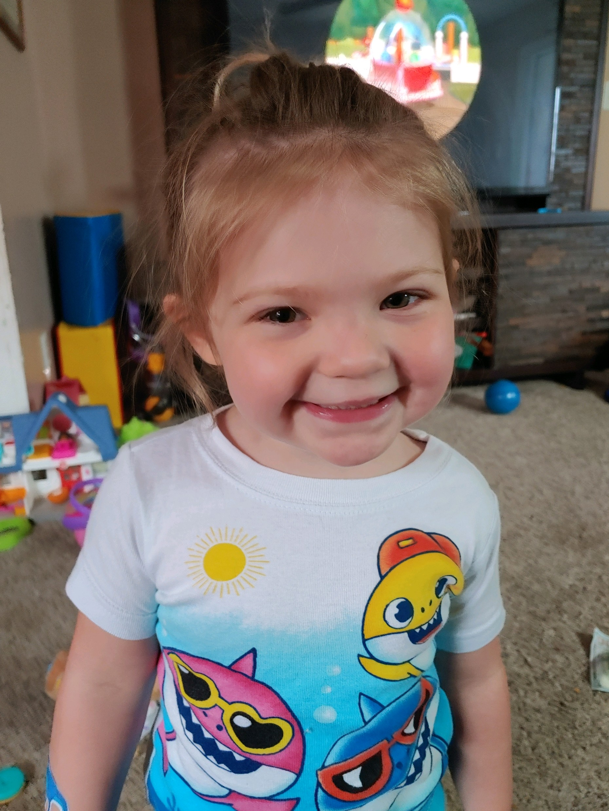
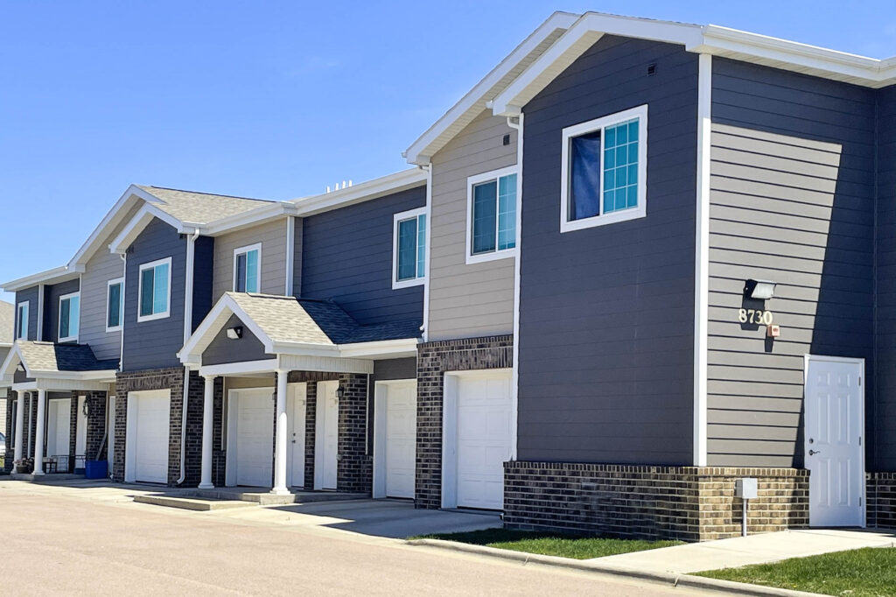
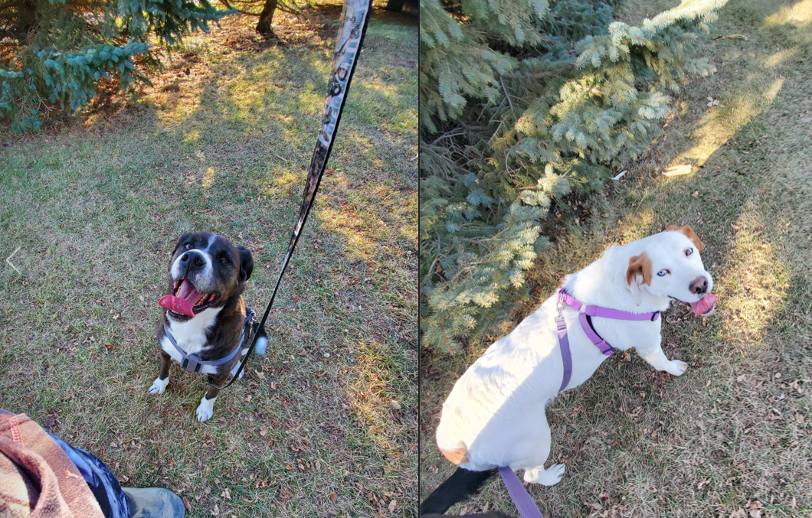

Traveling is something that I have always enjoyed since I was a little kid. That is all I want to do someday,
try and make it everywhere I possibly can. The world is a beautiful place and I want to see it all!
Reading / Writing / Shows
Book Art
When I have time, which is not very often, I really enjoy reading and writing. I also enjoy watching movies and tv shows.
It does not matter what genre it is, I enjoy almost anything when it comes to watching shows or reading. When I start reading a book,
or a comic it is hard for me to put them down. I also like to write fiction, though I have not for a while. Hoping to pick that back up soon.
Family

Niece
My family is very important to me and we are all very close. My niece in particular, she is my everything and I love her more than
anything in the world. I don't remember what life was like before she was born, I could not imagine life without her. Any spare moment
I have goes to her.
Work History
Property Management

Properties
Getting into property management was not planned. I was going to school the first time around, I need something
that was going to work with my schedule as I was a full time student trying to get two degrees. I found a part-time
position that was close to my home. I got the job and eventually started working full-time. I managed many properties
with a lot of different rules. My boss was amazing though so that helped things, but not something I would do again.
Network Technician
Network Tech
After I graduated from college I was able to land a really amazing job as a Network Technician. I did not start looking for a job
right away after gradation but when I did thankfully it did not take long for me to find one. With my network and security school experience
it made things a little easier on the job, though it was nothing like college. I did many things, and traveled to the different locations
we had. We were county employees so I supported all kinds of different people and equipment. I learned so much from that job, including what
I really wanted to do in the computer field. That is why I went back to school for the degree I am seeking now, Software Development.
Vet Clinic Manager

My dogs
A job that I will forever love and miss was managing a Vet Clinic. It was a small family owned vet clinic and it was just so amazing. I have
always loved animals and my family and I are pretty much crazy animal people, not just cats. I got this job through a connection that I had
and it was the best thing I have ever done. The most rewarding too. The owner ended up retiring and selling the place that is why I had to move
on with that chapter of my life. Since it was a small vet clinic, I got to do a little bit of everything there. I loved it all. Someday I want
to own my own boarding business. One day hopefully!